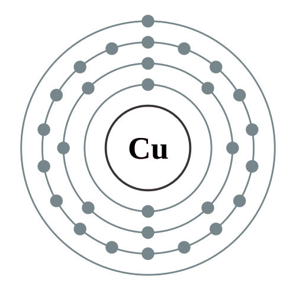

←
→
Copper is a chemical element with symbol Cu (from Latin: cuprum) and atomic number 29. It is a soft, malleable, and ductile metal with very high thermal and electrical conductivity. A freshly exposed surface of pure copper has a reddish-orange color. Copper is used as a conductor of heat and electricity, as a building material, and as a constituent of various metal alloys, such as sterling silver used in jewelry, cupronickel used to make marine hardware and coins, and constantan used in strain gauges and thermocouples for temperature measurement.
Copper is one of the few metals that can occur in nature in a directly usable metallic form (native metals). This led to very early human use in several regions, from c. 8000 BC. Thousands of years later, it was the first metal to be smelted from sulfide ores, c. 5000 BC, the first metal to be cast into a shape in a mold, c. 4000 BC and the first metal to be purposefully alloyed with another metal, tin, to create bronze, c. 3500 BC.
In the Roman era, copper was principally mined on Cyprus, the origin of the name of the metal, from aes сyprium (metal of Cyprus), later corrupted to сuprum, from which the words copper (English), cuivre (French), cobre (Spanish), Koper (Dutch) and Kupfer (German) are all derived.
The commonly encountered compounds are copper(II) salts, which often impart blue or green colors to such minerals as azurite, malachite, and turquoise, and have been used widely and historically as pigments.
Copper used in buildings, usually for roofing, oxidizes to form a green verdigris (or patina). Copper is sometimes used in decorative art, both in its elemental metal form and in compounds as pigments. Copper compounds are used as bacteriostatic agents, fungicides, and wood preservatives.
Copper is essential to all living organisms as a trace dietary mineral because it is a key constituent of the respiratory enzyme complex cytochrome c oxidase. In molluscs and crustaceans, copper is a constituent of the blood pigment hemocyanin, replaced by the iron-complexed hemoglobin in fish and other vertebrates. In humans, copper is found mainly in the liver, muscle, and bone. The adult body contains between 1.4 and 2.1 mg of copper per kilogram of body weight.